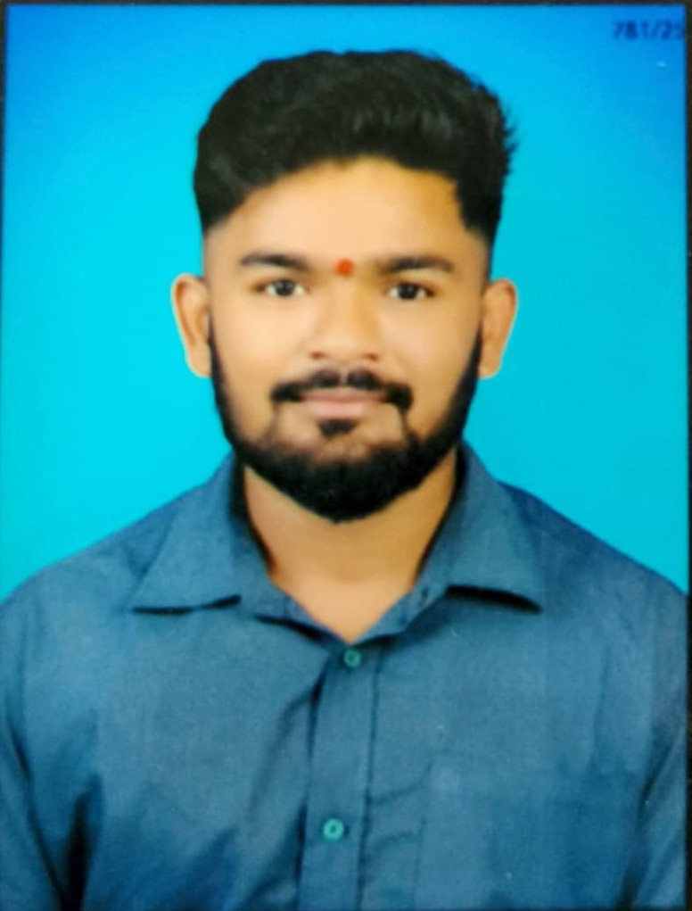

Languages
Python · C# · JavaScript · SQL · Java
MCA STUDENT / SOFTWARE DEVELOPER
I'm Jayesh, a software developer and MCA student in Pune. I enjoy turning ideas into practical applications, working with backend systems, and exploring how data and AI can solve real problems.

JT01 / ABOUT
I’m pursuing my Master of Computer Applications at Modern College of Engineering, Pune, after completing my BCA. My interests span software development, backend engineering, databases, and data-driven applications.
I like understanding how things work behind the interface—from API design and data storage to analysis and visualisation. Through academic projects and my data science internship, I’ve gained exposure to application development, data preparation, exploratory analysis, and machine-learning workflows.
I’m focused on strengthening my .NET and C# skills while continuing to learn, build practical projects, and improve my problem-solving abilities.
02 / TOOLKIT
A snapshot of technologies and tools I’ve worked with or am currently learning.
Python · C# · JavaScript · SQL · Java
Application interfaces and API development.
Structured data, queries, and relational databases.
Dataset exploration, visualisations, and ML workflows.
Tools for coding, testing, version control, and experimentation.
Strengthening production-ready development and deployment skills.
Skill levels vary by technology; some tools listed here are currently being learned.
03 / SELECTED WORK
Application development and data exploration. Real project links can be added when available.
A campus placement management system concept designed to connect students, companies, and college placement teams. Planned areas include student profiles, placement drives, applications, shortlisting, interviews, and results.
In development — features may change as the project progresses.A planned web app for entering details, choosing a resume template, and generating a downloadable PDF. The proposed flow also includes account registration and login.
Planned project — not presented as a completed application.Explored a Netflix dataset to study content types, genre patterns, and yearly trends. Work included data cleaning, EDA, visualisations, word clouds, and an experiment with K-Means clustering.
04 / EXPERIENCE
INTERNSHIP
Unified Mentor · June–December 2025
Gained practical exposure to data science tasks, including cleaning and preprocessing data, exploratory data analysis, creating visualisations, and learning machine-learning workflows.
CERTIFICATIONS
05 / EDUCATION
Modern College of Engineering
Savitribai Phule Pune University · Pune, MaharashtraProf. Ramkrishna More Arts, Commerce and Science College
Savitribai Phule Pune University · Akurdi, PuneBEYOND THE SCREEN
Outside academics, I enjoy fitness and challenging myself to stay consistent. One personal milestone has been reaching a combined 400+ kg across bench press, squat, and deadlift, with each lift above 100 kg.
I’ve also led trekking groups of around 7–8 people, coordinating the group and keeping safety a priority.
06 / CONTACT
I’m open to connecting about software development, backend engineering, and learning opportunities. Feel free to reach out.
jayeshthakare142@gmail.com ↗